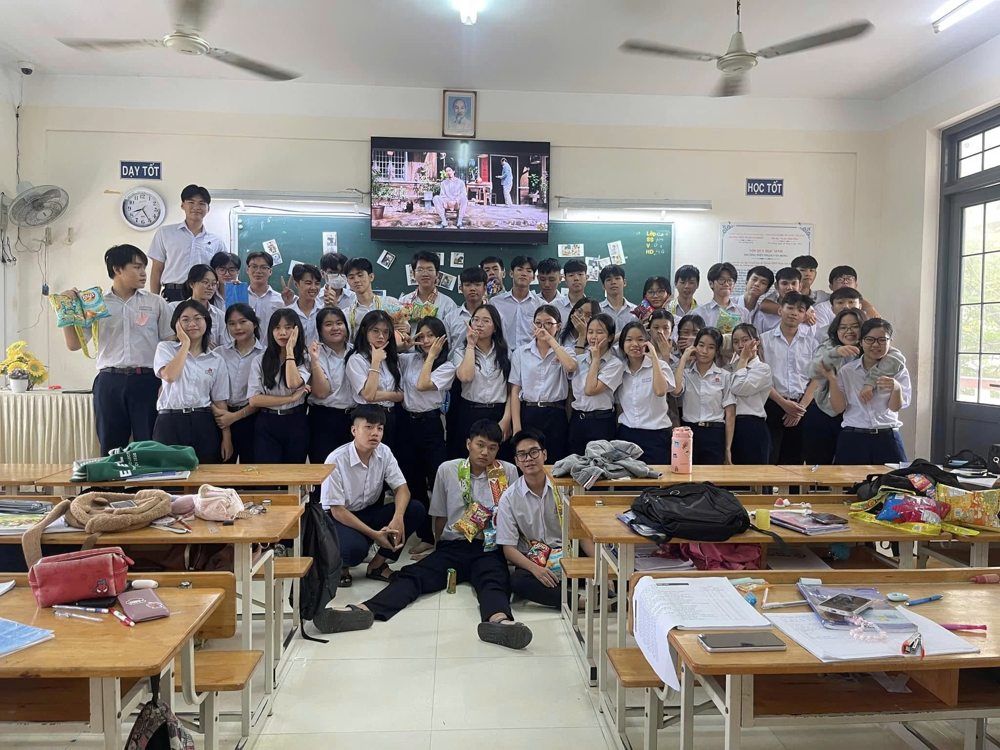

LỜI NÓI ĐẦU
Thời gian cứ thế lặng lẽ trôi qua, để rồi khi ngoảnh lại, chúng ta – những
học sinh lớp 12 – nhận ra mình đã đi đến những ngày cuối cùng của quãng
đời học sinh. Mười hai năm đèn sách là mười hai năm của những kỷ niệm, của
bao nỗ lực, cố gắng và trưởng thành.
Cuốn kỷ yếu này được tạo ra như một món quà lưu giữ thanh xuân – nơi hội
tụ những khoảnh khắc đẹp nhất của tuổi học trò, những dòng lưu bút chứa
chan tình cảm, những hình ảnh đáng nhớ của một thời áo trắng hồn nhiên,
trong sáng. Đây không chỉ là nơi ghi lại dấu ấn của một tập thể lớp, mà
còn là chiếc cầu nối giữa quá khứ và tương lai, để mỗi khi giở lại, chúng
ta có thể mỉm cười khi nhớ về những ngày tháng cũ.
Xin chân thành cảm ơn thầy cô – những người lái đò thầm lặng đã dìu dắt
chúng em trên hành trình tri thức. Cảm ơn cha mẹ – những người luôn là
điểm tựa vững chắc. Và cảm ơn tất cả những người bạn thân thương – những
người đã đồng hành, sẻ chia bao buồn vui suốt thời gian qua.
Mong rằng, dù mai này mỗi người một hướng đi, cuốn kỷ yếu này sẽ luôn nhắc
nhở chúng ta về một thời thanh xuân rực rỡ – thời học trò không thể nào
quên.
Thân ái,
Tập thể lớp 12A4
Niên khóa 2022 – 2025

CHÀO MỪNG ĐẾN VỚI KỶ YẾU LỚP 12A4
Lớp: 12A4 (Niên khóa 2022-2025)
Trường THPT Phạm Văn Đồng
Địa chỉ: 5 Trường Sơn, Vĩnh Nguyên, Nha Trang, Khánh Hòa
GVCN: Cô ĐỖ Thị Thanh Tâm
Thành tích nổi bật
📘 Năm lớp 10 (2022-2023)
- 🏆 KK PVD's Got Talent - "Dậy mà đi"
📗 Năm lớp 11 (2023-2024)
- 🏆 Đội được yêu thích nhất Glamour
- 🏆 KK PVD's Got Talent - "Việt Nam trong tôi là"
- 🏆 KK Thư pháp
- 🏆 Ba Lồng đèn
📙 Năm lớp 12 (2024-2025)
- 🏆 KK PVD's Got Talent - "Một vòng Việt Nam"
- 🏆 Nhất nhảy sạp 26/3